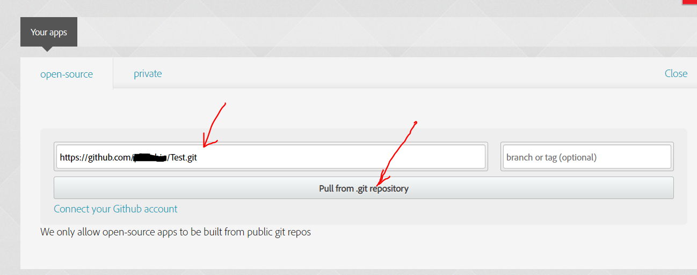
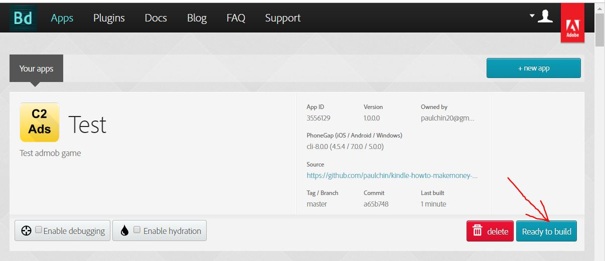
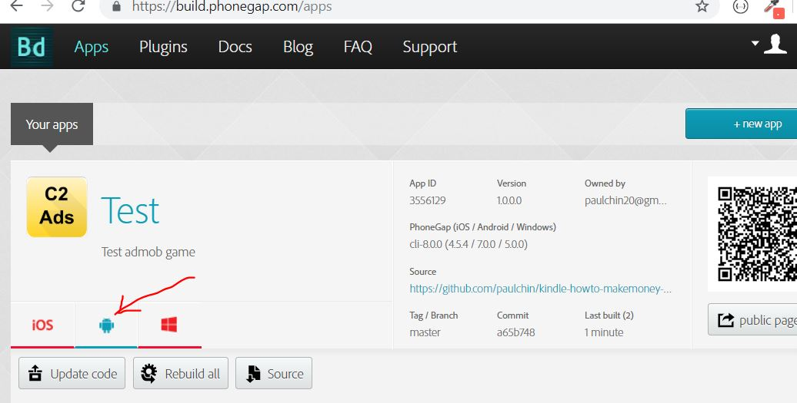

In this chapter we will be looking at how to create a PhoneGap Build account, creating a new app, linking the github repository and building an apk file.
First we will take a look at at phonegap build account and how it works.
PhoneGap build is a free service provided by Adobe to allow hybrid mobile app developers to convert their hybrid apps created with html, css and javascript into either Android, iOS or windows phone packages. However, one limitation of phonegap build is that, it only allows you to directly upload 1 zipped project. If you wanted to upload more projects, you will need to do it indirectly via github. That is the reason why, in the previous chapter, we studied how to create repositories using github. To create a free account with phonegap build, just head over to this website:
build.phonegap.com
and click on the button ‘Sign In’. In the sign-in page, you will be able to create a new Adobe ID, or, to sign-in with either facebook or google.
Sign in to your phonegap build account, then click on the button ‘+ new app’ to create a new app. Then go to your github project Test, and click on the green button: ‘Clone or Download’. Then click on the copy to clipboard icon as shown in Fig 8-1 below.
After you have copied the link to your github project, go back to phonegap build website and paste the link into the the textbox where it says ‘paste .git repo’. See Fig 8-2 below to get an idea of how to do this.

After you have pasted the github repo link, click on the button ‘Pull from .git repository’ as indicated by the 2nd red arrow as shown in Fig 8-2 above. Phonegap will fetch the project from the github repository. Next, you will need to refresh the page. Then, you will see the button: ‘Ready to build’ as shown in Fig 8-3 below.

Just go ahead and click on the button ‘Ready to build’. It will take about a minute or two to build the apk. Once it has successfully completed building the apk, you will be able to see the screen change to that which is as shown in Fig 8-4 below.

From Fig 8-4 above, you will see that there is a new button in sea-green color with the label apk as indicated by the red arrow. Just click on it to download the apk file to your computer. That concludes this chapter. In the next chapter, we will learn how to install an Android emulator called nox player and install the apk on the Android emulator to test it.